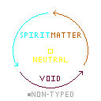

{% extends 'base.html' %}
{% block title %}Typing System{% endblock %}
{% block content %}
Typing System
The types
There are five elements/types in Spiral of Fate. Firstly there are Spirit, Matter and Void.
They are each assigned to a button, respectively S, M and V.
In general moves of a types tend to follow certain trend. Which are:
- Spirit (S) moves: tend to have a lot of range and give a lot of mana, making them especially good in neutral.
- Matter (M) moves: tend to be slow, however they hit hard and are more likely to have armor or properties to cover their slowness.
- Void (V) moves: tend to be fast and be generally useful in advantage states.
Then, there are Non-typed (NT) and Neutral (N) moves which are on the N button.
Those moves tend to be less specialized than their elemental counterparts, and have more balanced characteristics in general.
However, what is described above are nothing but tendencies and depending on the character, might be more or less true.
Each character have one speciality among those elements. Characters with certain type speciality will have more moves of said type.
Also, some characters might have a secondary speciality, giving them access to more moves of that type than normal.
The elemental wheel
The "elemental wheel" describes which elements beats which. As you can see below, it is pretty much a rock, paper, scissors, with Non-Typed losing or not interacting with other elements and Neutral winning against all but Non-typed.

In effect, the wheel doesn't interact with most moves, as a Void move will not necessarily "beat" a Matter move. However, it does interact with some special properties of moves.
For example, invincibility and guard points are generally Typed, which means you can be hit during those moves by the stronger type.
Moreover, most system mechanics (mechanics common to all characters) interact in some way or another with this wheel, but we will develop that in the said mechanics sections.
Even if it is good to know that the wheel exists as to not be too surprised when it comes into play, it is only worth mastering for optimisation; ignoring it won't deprive you of any essential tool.
Type status effects
When one takes a hit from any Typed move (and whether they block it or not) they will be inflicted a status effect depending on the move type they've been hit by.
- Spirit each hits on a character already affected by this status effect will give 2 times more mana.
- Matter the guard bar doesn't regenarate as long as you're affected.
- Void inflicts a dot that deals chip damage (this damage cannot kill).
- Neutral removes the Typed properties of all your moves which are now considered Non-typed.
- Non-typed doesn't inflict any status but it also won't replace or remove any status effect already in place.
When someone inflicted by a status effect is hit by another move of another type, the new status effect will replace the one already in place (except for Non-typed).
How long the status effect will linger depends on how high in the cancel tree the move that inflicted the status is (so jab don't inflict it for long and things like specials or supers inflict it for much longer).
Type switch
You can press A + S/M/V even during another move to do a type switch for 10% of meter.
after a type switch your next moves for a 1/3 of a second will be of the type of the type switch (S for Spirit, M for Matter, V for Void).
This will only change what the type of the hit of a move, as such it will inflicts the status effect of its new type but, if the move that has been typed switch has Typed armor, invincibility or other specific typed properties, they will not change.
Think of this mechanic as an option to apply a certain status effect when you can't just use a move of the type you want or, more importantly, as an answer to any Typed defensive option.
{% endblock %}